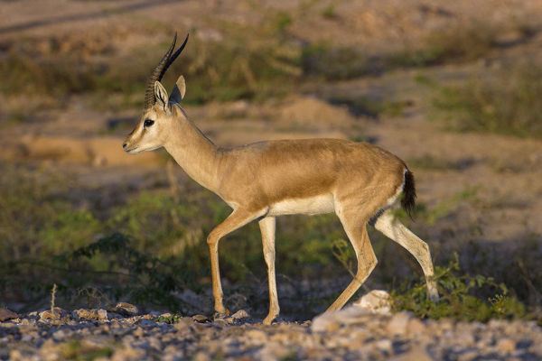

Location : Koriya district of Chhattisgarh and Sidhi, Singrauli districts of Madhya Pradesh
Established in : 1981
Area : 466.657 km2 Flora : Dry deciduous forests, mainly composed of tropical forests of Sakhua
Fauna : The Bengal tiger, Indian leopard, Spotted deer, Sambar deer, wild boar, Nilgai, Chinkara,
Civet, Porcupine, Monitor lizard, and 309 species of birds are found here. Among the many birds here are the Golden
Hooded Oriole, Racket-tailed Drongo, Indian pitta, Rufous treepie, Lesser adjutant, Red-headed vulture, Cenareous
vulture, White-rumped vulture, Egyptian vulture and Nightjar.
Features : Part of Sanjay-Dubri Tiger Reserve
Guru Ghasidas (Sanjay) National Park

Chinkara
Red-headed vulture
Indravati National Park
Location : Bijapur district of Chhattisgarh
Established in : 1981
Area : 2799.08 km2 Flora : Tropical moist and dry deciduous vegetation with dominance of bamboo, sal and teak. There are
rich patches of grassland. The most common trees are teak, lendia, salai, mahua, tendu, semal, haldu, ber and jamun.
Fauna : Wild Asian buffalo, gaur (Indian bison), nilgai, blackbuck, chausingha (four-horned antelope),
sambar, chital, Indian muntjac, Indian spotted chevrotain and wild boar. Large predators are represented by tigers,
leopards, sloth bears, dholes (wild dog) and striped hyenas. Smaller mammals include flying squirrel, porcupine,
pangolins, rhesus monkeys and langurs among many others.
Reptiles in the park are freshwater crocodile, monitor lizard, Indian chameleon, common krait, Indian rock python,
cobra and Russell's viper. Hill myna is the most important species of birds found here.
Features : Became a Tiger Reserve in 1983 under the Project Tiger
Indravati National Park
Wild Asian buffalo
Striped hyena
Kanger Ghati National Park
Location : Near Jagdalpur in the Bastar region of Chhattisgarh
Established in : 1982
Area : About 200 km2 Flora : Mixed moist deciduous type of forests with predominance of sal, teak and bamboo trees,
553 floral species out of which 12 species are new to Chhattisgarh; 43 species are reported rare
Fauna : Tigers, leopards, mouse deer, wild cat, chital, sambar, barking deer, jackals, langurs,
rhesus macaque, sloth bear, flying squirrel, wild boar, striped hyena, rabbits, pythons, cobra, crocodiles,
monitor lizards and snakes
The avian fauna includes hill myna, spotted owlet, red jungle fowl, racket-tailed drongos, peacocks, parrots,
steppe eagles, red spurfowl, phakta, bhura teeter, tree pie and heron.
Features : it is one of India's densest national parks, and is known for its biodiversity,
landscape, waterfalls, and subterranean geomorphologic limestone caves, and as the home of the Bastar hill myna,
the state bird of Chhattisgarh.